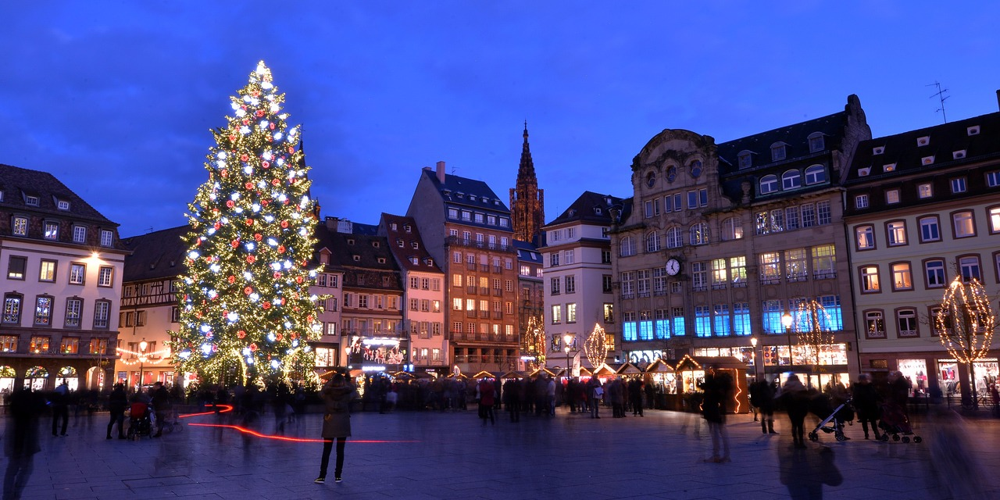
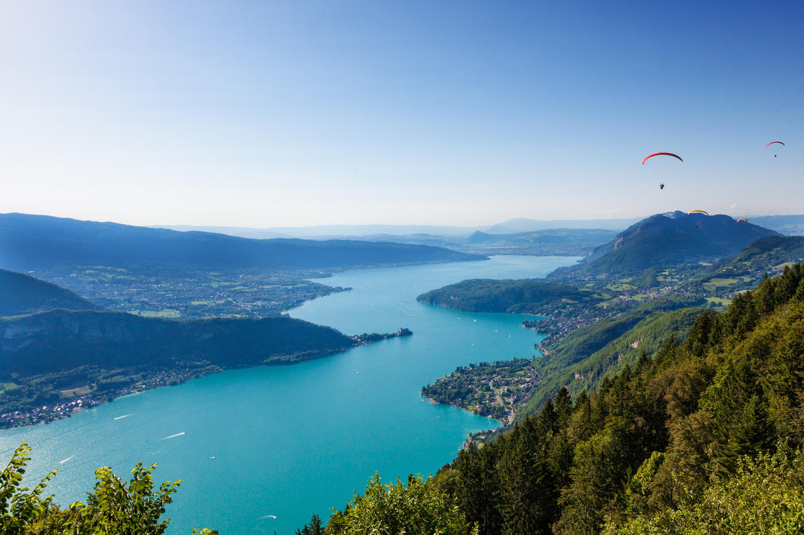

Guillaume de Montecler
Full Stack Programmer
Former Management Consultant heading enthusiastically into the Tech World
Last places I visited in France
|  |
Strasbourg est la capitale de la région Alsace-Champagne-Ardenne-Lorraine (Grand Est) au nord-est de la France. Il s'agit également du siège officiel du Parlement européen. Située près de la frontière avec l'Allemagne, la ville arbore une culture et une architecture aux influences allemandes et françaises. La cathédrale gothique Notre-Dame de Strasbourg propose des animations quotidiennes sur son horloge astronomique et une vue panoramique sur le Rhin à mi-hauteur de son clocher de 142 mètres de haut. |
|  |
Annecy est une ville des Alpes située dans le sud-est de la France. C'est là que le lac d'Annecy se déverse dans le Thiou. Elle est réputée pour sa vieille ville avec ses rues pavées, ses canaux sinueux et ses maisons aux couleurs pastel. Surplombant la ville, le château médiéval d'Annecy, ancienne résidence des comtes de Genève, abrite un musée proposant des objets régionaux, tels que du mobilier alpin ou des œuvres religieuses, ainsi qu'une exposition sur l'histoire naturelle. |
La Baule |
|
 |
La Baule-Escoublac est une commune de l'Ouest de la France, dans le département de la Loire-Atlantique, en région Pays de la Loire. Située sur le littoral atlantique, elle fait partie de la Côte d'Amour, entre Le Pouliguen et Pornichet. |